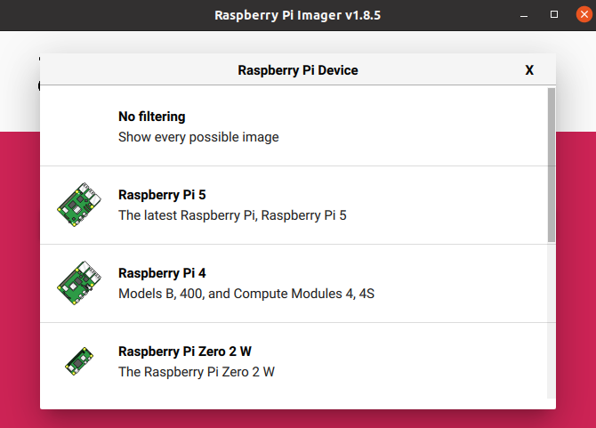
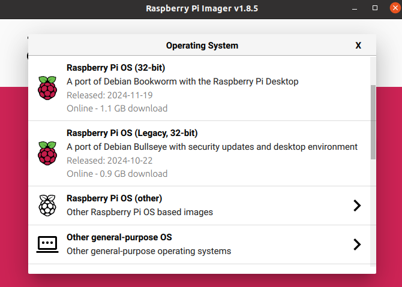
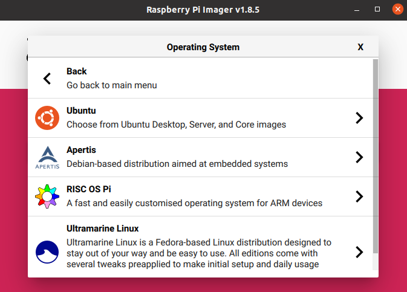
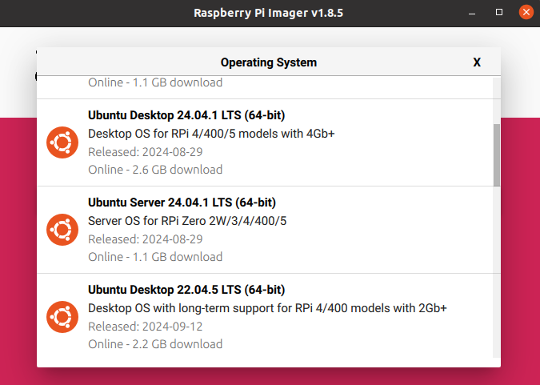
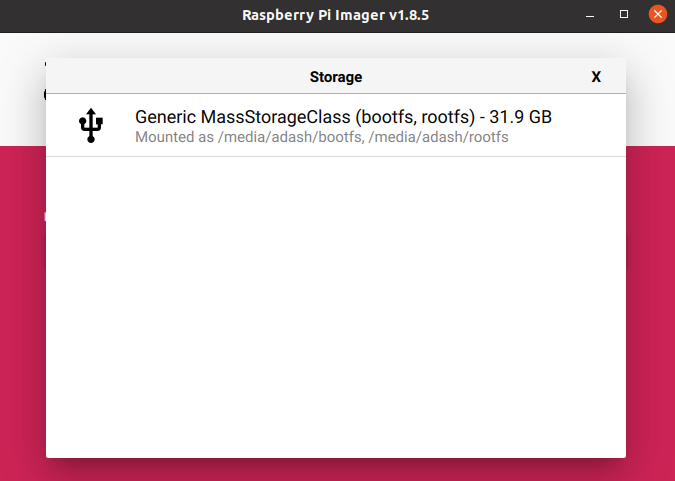
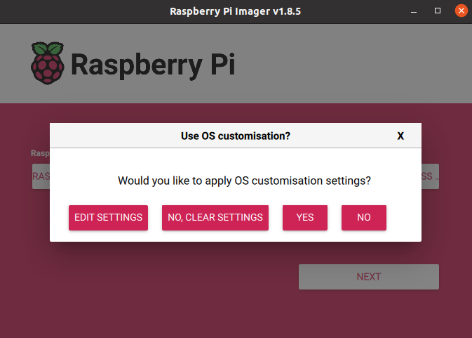
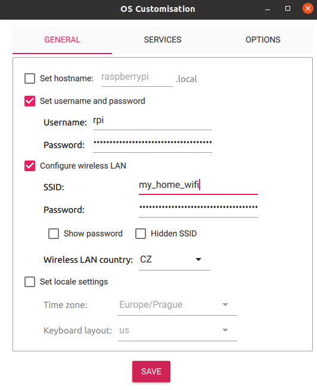
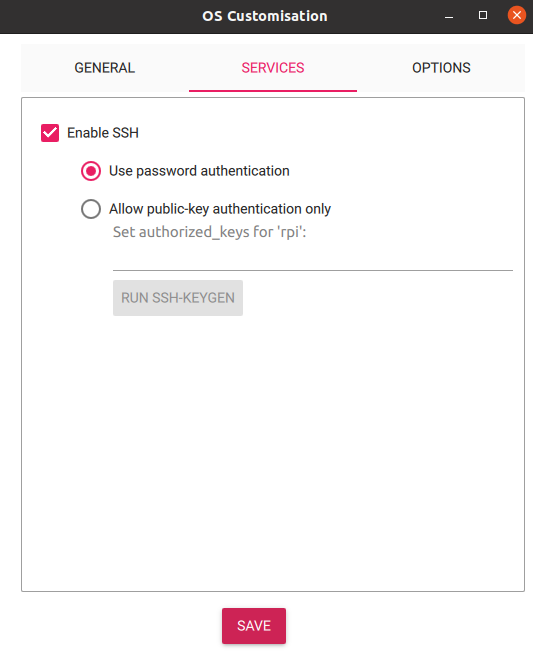
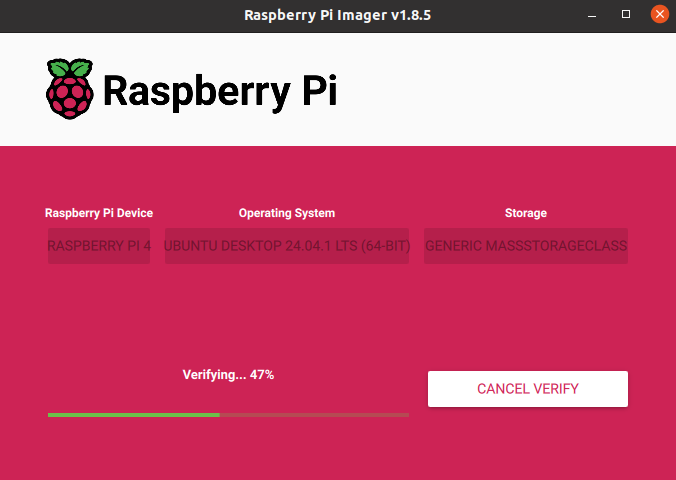

RPi Installation
Required HW
- Respberry Pi 4B (8GB RAM recommended)
- Micro SD Card (minimal 16GB, 64GB recommended)
- SD Card to USB Adapter
Installation
Install RPi-Imager on your Linux PC
sudo apt install rpi-imager
Run RPi-Imager
rpi-imager
Select Device (Raspberry Pi 4)
Select OS - Others General Purpose OS -> Ubuntu -> Ubuntu Server 22.04.5 LTS (64b)
  Select target device (SD Card)
Click Next -> Edit Settings
Setup user, password, WiFi and SSH
 Confirm and wait until writing is finished.
Now put the SD card into the RPi and power on.
In case of problems, please visit Official Documentation
OS Configuration
Connect to the Raspberry Pi
ssh <user>@<ip_address>
Run first installation script and reboot afterwards. The script may require user input for confirmation on restarting services
sudo bash first_start.sh
sudo reboot now
The script will:
- run system update and upgrade some system packages
- modify the boot firmware config
- create a swapfile (can be removed on systems with more RAM)
- add the user to following groups -
video,tty,dialout - disable the boot Ethernet timeout
After rebooting the system, run the second script.
sudo bash installation.sh
The script will:
- update system and install necessary packages
- install Python packages
- install ROS 2 and Colcon
- clone
fenrir-projectrepository - build ROS 2 packages
- add services to the system and enable them at startup
If user name is different then "robot", paths in scripts and service files need to be changed, along with the user for one of services.
#in repository
fenrir-project/software/raspberry_pi/prp_root.service
fenrir-project/software/raspberry_pi/prp_user.service
#or after install
/etc/systemd/system/prp_root.service
/etc/systemd/system/prp_user.service
The ROS_DOMAIN_ID can be changed in the *.service files or optionally in ~/.bashrc.
Starting services
Start the necessary services for ROS 2 nodes:
sudo systemctl start prp_root.service
sudo systemctl start prp_user.service
Cloning SD card
Prequisitions:
- Linux OS
- SD card reader
- A SD card with configured system
- An empty SD card of the same size
# Insert the SD card with the existing system
lsblk # Identify the SD card and its partitions (e.g., /dev/sdc1 and /dev/sdc2)
# Unmout the SD card
sudo umount /dev/sdc*
# Create an image of the SD card with the system
sudo dd if=/dev/sdc of=~/Documents/prp/robot.img bs=4M status=progress
sudo eject /dev/sdc
# Swap the SD card with an empty one
lsblk # Identify SD card and its partitions (e.g., /dev/sdc1 and /dev/sdc2)
sudo dd if=~/Documents/prp/robot.img of=/dev/sdc bs=4M status=progress # apply image to the SD card
sudo sync
# Mount the SD card's partitions
sudo mkdir /media/jakub/card1
sudo mount /dev/sdc1 /media/jakub/card1
sudo mkdir /media/jakub/card2
sudo mount /dev/sdc2 /media/jakub/card2
# Replace the old hostname for new one
sudo sed -i 's/prp-red/prp-green/g' /media/jakub/card1/user-data /media/jakub/card2/etc/hostname /media/jakub/card2/etc/hosts
# Unmount SD card and remove created folders
sudo umount /media/jakub/card1
sudo umount /media/jakub/card2
sudo rmdir /media/jakub/card1/
sudo rmdir /media/jakub/card2/
ROS_DOMAIN_ID can be rewritten in files:
~/.bashrc
/etc/systemd/system/prp_user.service
/etc/systemd/system/prp_root.service